<!DOCTYPE php>
 <php lang="en">
	 <head>
		 <meta charset="utf-8" />
		 <meta name="viewport" content="width=device-width, initial-scale=1.0" />
		 <meta name="description" content="உலகின் முதல், புனித தெரேசா ஆலயம் - கண்டன்விளை (Estd.1923)" />
		 <meta name="author" content="webThemez.com" />
		 <title>STCK : பங்கு அருட்பணியாளர்கள் </title>
		 <link rel="favicon" href="../assets/images/favicon.png" />
		 <link rel="stylesheet" media="screen" href="../../fonts.googleapis.com/css_c5f925f2.css" />
		 <link rel="stylesheet" href="bootstrap.min.css" />
		 <link rel="stylesheet" href="../assets/css/font-awesome.min.css" />
		 <link rel="stylesheet" href="../assets/css/bootstrap-theme.css" media="screen" />
		 <link rel="stylesheet" href="style.css" />
	 </head>
	 <body>
		 <div class="navbar navbar-inverse">
			 <div class="container">
				 <div class="navbar-header">
					 <button type="button" class="navbar-toggle" data-toggle="collapse" data-target=".navbar-collapse"><span class="icon-bar"></span><span class="icon-bar"></span><span class="icon-bar"></span></button>
					 <a class="navbar-brand" href="index.php.html"></a>
				 </div>
				 <!DOCTYPE php>
	 <script src="../../ajax.googleapis.com/ajax/libs/jquery/1.10.2/jquery.min.js"></script>
	 <script>
		var $j = jQuery.noConflict();
		$j(document).ready(function(){
			var pageName = location.href.split("/").slice(-1);
			if (pageName == "" || pageName == "index.php.html")
			{
				$('#homePage').addClass('active');
			}
			else if (pageName == "ancient-history.php.html" || pageName =="our-church.php.html" || pageName =="about-therese.php.html" || pageName =="sttherese-churches-in-india.php.html" || pageName =="rosary-hill.php.html")
			{
				$('#about').addClass('active');
			}
			else if (pageName == "parish-priests.php.html" || pageName == "sons-of-soil-priests.php.html" || pageName == "sons-of-soil-nuns.php.html")
			{
				$('#priestsAndNuns').addClass('active');
			}
			else if (pageName == "associations.php.html")
			{
				$('#piousAssociation').addClass('active');
			}
			else if (pageName == "documentary-video.php.html" || pageName =="church-altar-photos.php.html" || pageName =="festival-videos.php.html" || pageName =="festival-photos.php.html" || pageName =="car-photos.php.html" || pageName =="flagstaff-photos.php.html" || pageName =="church-photos.php.html" || pageName =="steeple-photos.php.html" || pageName =="other-photos.php.html" || pageName =="rosaryhill-photos.php.html" || pageName =="topview-photos.php.html")
			{
				$('#galleryPage').addClass('active');
			}
			else if (pageName == "parish-council.php.html")
			{
				$('#parishCouncil').addClass('active');
			}
			else if (pageName == "contact.php.html")
			{
				$('#contactPage').addClass('active');
			}
		});
	</script>
	 <div class="navbar-collapse collapse">			
		 <ul class="nav navbar-nav pull-right mainNav">
			 <li id="homePage"><a href="index.php.html">முகப்பு </a></li>
			 <li id="about" class="dropdown"><a href="#" class="dropdown-toggle" data-toggle="dropdown">வரலாறு <b class="caret"></b></a>
				 <ul class="dropdown-menu">
					 <li><a href="ancient-history.php.html">கண்டன்விளை பங்கு </a></li>
					 <li><a href="our-church.php.html">எமது ஆலய வரலாறு </a></li>
					 <li><a href="about-therese.php.html">புனித தெரேசா வரலாறு </a></li>
					 <li><a href="sttherese-churches-in-india.php.html">இந்தியாவில் புனித தெரேசா ஆலயங்கள் </a></li>
					 <li><a href="rosary-hill.php.html">ஜெபமாலை மலை சிற்றாலயம் </a></li>
				 </ul>
			 </li>
			 <li id="priestsAndNuns" class="dropdown">
				 <a href="#" class="dropdown-toggle" data-toggle="dropdown">துறவியர்  <b class="caret"></b></a>
				 <ul class="dropdown-menu">
					 <li><a href="parish-priests.php.html">பங்கு அருட்பணியாளர்கள் </a></li>
					 <li><a href="sons-of-soil-priests.php.html">மண்ணின் மைந்தர்கள் - குருக்கள் </a></li>
					 <li><a href="sons-of-soil-nuns.php.html">மண்ணின் மைந்தர்கள் - கன்னியர்கள் </a></li>
				 </ul>
			 </li>
			 <li id="piousAssociation"><a href="associations.php.html">சபைகள் </a></li>
			 <li id="galleryPage" class="dropdown"><a href="#" class="dropdown-toggle" data-toggle="dropdown">தொகுப்பு  <b class="caret"></b></a>
				 <ul class="dropdown-menu">
					 <li><a href="documentary-video.php.html">குறும்பட வெளியீடுகள் </a></li>
					 <li><a href="church-altar-photos.php.html">ஆலயப் பீடம் </a></li>
					 <li><a href="festival-videos.php.html">திருவிழா காணொளிகள் </a></li>
					 <li><a href="festival-photos.php.html">திருவிழா புகைப்படங்கள் </a></li>
					 <li><a href="car-photos.php.html">ஆலயத் தேர் </a></li>
					 <li><a href="flagstaff-photos.php.html">ஆலயக் கொடிமரம் </a></li>
					 <li><a href="church-photos.php.html">ஆலயப் புகைப்படங்கள் </a></li>
					 <li><a href="steeple-photos.php.html">ஆலயக் குருசடி </a></li>
					 <li><a href="other-photos.php.html">இதரப் புகைப்படங்கள் </a></li>
					 <li><a href="rosaryhill-photos.php.html">சிற்றாலயப் புகைப்படங்கள் </a></li>
					 <li><a href="topview-photos.php.html">ஆலய மேற்புறக் காட்சிகள் </a></li>
				 </ul>
			 </li>
			 <li id="parishCouncil"><a href="parish-council.php.html">பங்குப்பேரவை </a></li>
			 <li id="contactPage"><a href="contact.php.html">முகவரி </a></li>
			 <li><a href="../index.php.html" title="Read the website in English...">English </a></li>
			 <li><a href="https://www.youtube.com/c/StThereseChurchKandanvilai/live" target="blank" class="blinking">நேரலை </a></li>
		 </ul>				
	 </div>
 </div></div></body></php>			 </div> 
		 </div> 
		 <header id="head" class="about_therese">
			 <div class="container">
				 <div class="row">
					 <div class="col-sm-8">
					 </div>
				 </div>
			 </div>
		 </header>
		 <div class="container">
			 <div class="row">
				 <section class="col-sm-12 maincontent"><br />
					 <h2>பங்கு அருட்பணியாளர்கள் </h2>
					 <p>கண்டன்விளை பங்கின் வாழ்வுக்கும் வளர்ச்சிக்கும் _ு_ு_ு__்_ா___ா_ இருந்தவர்கள், அங்கு மிகுந்த அர்ப்பணத்துடன் __ி_ா_்_ி_ அருட்தந்தையர்களும் அவர்களுடன் ஒத்துழைத்த பங்கு __ை__்__ு_்_ா_் என்பது மறுக்க முடியாத உண்மை. __்__்_ி_ை பங்கு காரங்காடு பங்கின் கிளைப்பங்காக __ு_்__ோ_ு அருட்தந்தையர் மூவர் பணியாற்றியுள்ளனர். </p><br />
					 <h4>1. அருட்தந்தை. இக்னேஷியஸ் மரியா (1927 - 1931)  </h4>
					 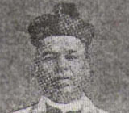
					 <p>அருட்தந்தை. இக்னேஷியஸ் மரியா அவர்கள் 1927 - முதல் 1931 - __் ஆண்டு வரை பணியாற்றினார்கள். அன்னாருடைய __ி_்_ா__்_ி_் 1927 - ஆம் ஆண்டுதான் _ு_ி_ குழந்தை இயேசுவின் தெரசா ஆலயம் __்_ு_் பணி ஆரம்பிக்கப்பட்டது. திருப்பயணிகள் வசதிக்காக _ா_ை ஓரத்தில் ஒரு குருசடியும் கட்டப்பட்டது. __்__ி_் தேவையை நிறைவு செய்ய ஒரு __்_ி__் (சாவடி) கட்டவும் கிணறு வெட்டவும் __்_ு_்__்_ை இல்லம் அமைக்கவும் மக்களை ஊக்கப்படுத்தினார். </p>
					 <br /><br />
					 <h4>2. அருட்தந்தை. வற்கீஸ் (1931 - 1934)  </h4>
					 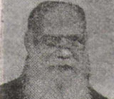
					 <p>1931 முதல் 1934 - __் ஆண்டு வரை பணியாற்றிய அருட்தந்தை. __்_ீ_் அவர்களுடைய காலத்தில், ஆலயத்தின் வடக்குப் __ு_ி_ி_் மணிக்கோபுரம் கட்டப்பட்டு அதில் புனித _ு__்_ை இயேசு தெரசாவின் உடன் பணியாற்றிய _ா_்__் சபை அருட்சகோதரிகள் பிரான்ஸ் நாட்டிலிருந்து __ு_்_ி_்__்_ இரு மணிகளும் நிறுவப்பட்டன. </p>
					 <br /><br /><br />
					 <h4>3. அருட்தந்தை. D.C. ஆன்றனி (1934 - 1944)  </h4>
					 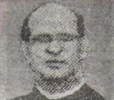
					 <p>1934 முதல் 1944 - __் ஆண்டு வரை பணிபுரிந்த அருட்தந்தை. _._. ஆன்றனி அவர்களின் காலத்தில் பெரியவர்களுக்கு _ா_ா சபை, கிறிஸ்தவ வாழ்வு சமூகம் __்_ பக்த சபைகளும், சிறாருக்கு நற்கருணை _ீ__் சபையும் தொடங்கப்பட்டன. அவரே புனித _ெ__ா பள்ளிக்கான கட்டடத்தையும் எழுப்பினார். அவர் __ி_்_ா__்_ி_் மிகச் சிறந்த சாதனை, பொதுக்கல்லறைத் _ோ_்__்_ி_்_ா_ ஏற்பாடுகளைச் செய்ததே ஆகும். அவரது __்__ி முழுமைபெற திரு. பாக்கியநாதன் என்பவர் __்_ி_்_ி_ி_ை என்ற பெயர் கொண்ட நிலத்தைக் __்__ை_் தோட்டத்திற்காக நன்கொடையாகக் கொடுத்து உதவினார். </p>
					 <br /><br /><br />
				 </section>
				 <section class="col-sm-12 maincontent">
					 <br />
					 <p><h5><i><b>இதுகாறும் கிளைப்பங்காக இருந்த கண்டன்விளை, 1944 - ஆம் ஆண்டு கோட்டாறு __ை_ா__்__்_ி_் ஒரு பங்காக நிலை உயர்வு _ெ_்__ு. தொடர்ந்து பணியாற்றிய அருட்தந்தையர்களின் உழைப்பால் __்__்_ி_ை பல துறைகளில் வியக்கத்தக்க வளர்ச்சி __்_ு_்__ு. </b></i></h5></p>
					 <br /><br />
					 <h4>1. அருட்தந்தை. V.J. ஸ்டீஃபன் (1944 - 1949)  </h4>
					 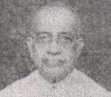
					 <p>தனிப்பங்காக உயர்த்தப்பட்ட கண்டன்விளை பங்கின் _ு__் பங்குத்தந்தையாக அருட்தந்தை. V.J. ஸ்டீஃபன் _ொ_ு_்_ே_்_ா_். அவரது பணிக்காலத்தில் ஒரே கல்லாலான ___்_்_ கொடிமரம் நிறுவப்பட்டது. அவரே சாலையோரத்தில் __ை_்_ி_ு_்_ு_் கோபுரக் குருசடிக்கு அடிக்கல் நாட்டினார். ____ு காலத்தில் அமைக்கப்பட்ட லூர்து அன்னை _ெ_ி_ு_் பவனிக்காக தேர்களில் சக்கரங்கள் பொருத்தப்பட்டதும் __்_ு_் நினைவுகூரத்தக்கவை. </p>
					 <br /><br />
					 <h4>2. அருட்தந்தை. J. பயஸ் _ோ_ி_் (1949 - 1963)  </h4>
					 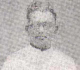
					 <p>1949 முதல் பணிப் பொறுப்பேற்ற __ு_்__்_ை. J. பயஸ் மோரிஸ் அவர்கள் 14 ஆண்டுகள் பணிபுரிந்தார்கள். அவர்கள் ஜெபமாலை __ை_்_ா_ சொத்துக்களை வாங்கிச் சேர்த்தார். இம்மலையில் __ி__்_ை_ி_் பக்தர்கள் வந்து ஜெபிக்கத் தொடங்கினர். __்_ொ_ு_ு_்_ அருட்சகோதரியர் இல்லம், கைத்தறி நெசவாலை __ு_்_ு_் இடம் ஆகியவையும் தந்தையவர்கள் வாங்கியவையே. __ி_ா_ி_் சேனை பிரசீடியம் தொடங்கியதும் ஆலயத்தின் _ி_் இணைப்புப் பெற ஏற்பாடுகள் செய்ததும் __்_ை___்__ி_் சிறப்புச் செயல்பாடுகளாகும். </p>
					 <br />
					 <h4>3. அருட்தந்தை. L. சேவியர் __ா___ி (1963 - 1964)  </h4>
					 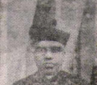
					 <p>1963 முதல் 1964 வரை __ு_்__்_ை. L. சேவியர் இராஜமணி அவர்கள் __்_ு_்__்_ை_ா__் சிறப்பாகப் பணியாற்றினார்கள். </p>
					 <br /><br /><br /><br /><br />
					 <h4>4. அருட்தந்தை. பெனடிக்ட். J.R. __ெ_்_ா_்__் (1964 - 1967)  </h4>
					 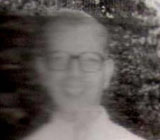
					 <p>1964 முதல் 1967 - __் ஆண்டு வரை பணியாற்றிய அருட்தந்தை. _._._. அலக்சாண்டர் அவர்களின் பெருமுயற்சியால் அருட்தந்தை. _._. ஸ்டீபன் ஆரம்பித்து வைத்த கோபுரக் _ு_ு__ி_் பணி முடிக்கப்பட்டு 1967 - __் ஆண்டு டிசம்பர் 12 - __் நாள் அர்ச்சிக்கப்பட்டது. ஒவொரு வாரமும் __ி_ி__்__ு_்_ு மறைக்கல்விப் பயிற்சியும், மாணவர்கள் மிகுந்த __ு_ா_்_ு__் மறைக்கல்வி பயில வகுப்பில் புதிய _ோ__ை முறைகளும் யுக்திகளும் புகுத்தப்பட்டன. </p>
					 <br /><br />
					 <h4>5. அருட்தந்தை. M. சூசை _ை_்_ே_் (1967 - 1968)  </h4>
					 
					 <p>1967 முதல் 1968 வரை __ா_்_ு மாடதட்டுவிளை பங்குத்தந்தையாக பணியாற்றிக்கொண்டிருந்த அருட்தந்தை. _. சூசைமிக்கேல் அவர்களின் கண்காணிப்பில் கண்டன்விளைப் __்_ு செயல்பட்டுவந்தது. </p>
					 <br /><br /><br /><br />
					 <h4>6. அருட்தந்தை. M. மரிய _ி__ோ_ி (1968 - 1972)  </h4>
					 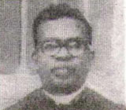
					 <p>1968 முதல் 1972 வரை __ி_ா_்_ி_ அருட்தந்தை. M. மரிய கிரகோரி ___்__் ஆலயத்தின் விரிவாக்கத்திற்கு அடித்தளமிட்டர்கள். ஜெபமாலை __ை_்_ு_் செல்லும் வழிக்கான இடத்தை வாங்கி, __ி_ு_் அமைத்தார். ஆலயத்தில் ஒலிபெருக்கி வசதியையும் __்__ு_்_ி_ா_். சதா சகாய அன்னையின் நவநாளையும் ___்_ி_்_ா_். முதல் நற்கருணை விருந்தில் பங்குபெறும் _ி_ா_ு__் பெற்றோரும் பங்கெடுக்க கடைப்பிடிக்க வேண்டிய __ு_்_ு_ு_ை__ை_ு_் செயல்படுத்தினார். உடல் நலக்குறைவின் காரணமாக 1972 - இல் ஓய்வு பெற்றார். </p>
					 <br />
					 <h4>7. அருட்தந்தை. N.J. ஜார்ஜ் (1972 - 1973)  </h4>
					 
					 <p>அருட்தந்தை. M. மரிய கிரகோரி ___்__் நோய்வாய்ப் பட்டதனால், பங்கின் பொறுப்பை __ு வருட காலத்திற்கு அருட்தந்தை. N.J. _ா_்_் (1972 - 1973) அவர்கள் __்_ு_் சிறப்பாக செயல்பட்டார். </p>
					 <br /><br /><br /><br />
					 <h4>8. அருட்தந்தை. C.F. வென்சஸ்லாஸ் (1973 - 1976)  </h4>
					 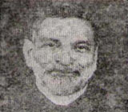
					 <p>தொடர்ந்து பங்கின் பணிப்பொறுப்பினை ஏற்ற __ு_்__்_ை. C.F. வென்சஸ்லாஸ் அவர்களின் பணிக்காலத்தில் (1973 - 1976) பங்கின் மேலாண்மைக் _ு_ு, ஆரம்ப சுகாதார மையம், கூட்டுறவுச் __்__் முதலியன ஏற்படுத்தப்பட்டன. அதோடு, வின்சென்ட் _ே பவுல் சங்கமும் தோற்றுவிக்கப்பட்டது. </p>
					 <br /><br /><br /><br>
					 <h4>9. அருட்தந்தை. T. ஜேசுதாசன் _ா__் (1976 - 1980)  </h4>
					 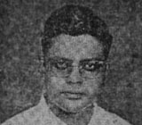
					 <p>1976 - ஆம் ஆண்டு _ு__் அருட்தந்தை. T. ஜேசுதாசன் தாமஸ் ___்__் பங்குத்தந்தையாகச் சிறப்பாகப் பணியாற்றினார்கள். அவர்களுடைய _ா__்_ி_்_ா_் ஆலய தலைவாயிலின் விரிவாக்கமும் கோபுரமும் __்_ி முடிக்கப்பட்டு 1979 - ஆம் __்_ு அக்டோபர் மாதம் 5 - __் நாள் அர்ச்சிக்கப்பட்டது. பங்கு மேய்ப்புப்பணிப் _ே__ை அலுவலகம், கைத்தறி சங்கக் கட்டடம், __ு_்__ோ__ி__் இல்லம், அம்பர் நூற்பு மையம், ___ை__் பள்ளி முதலியன கட்டி முடிக்கப்பட்டன. __்_ை___்__், வேலைக்கு உணவு (food for ____) திட்டத்தின் கீழ் ஏழைகள் பலருக்கு _ீ_ு__் கட்டிக் கொடுத்தார்கள். குளங்களை தூர்வாரியும், _ி__ு__ை_் புதுப்பித்து குடிநீர் பிரச்சனைகளுக்கு முடிவு __்_ா_். காஞ்சிரங்குளத்தின் கரையில் அமைந்துள்ள கிணறு __்__ி அமைக்கப்பட்ட கிணறுகளில் ஒன்று என்பது _ு_ி_்_ி__்__்__ு. மக்கள் அனைவரையும் ஒன்றிணைத்து ஆலயத்தின் _ொ_்_ி_ா_ை_் கொண்டாடி பொன்விழா மலரையும் வெளியிட்டார். </p></br>
					 <h4>10. அருட்தந்தை. M. அருள் _ே__ா__் (1980 - 1985)  </h4>
					 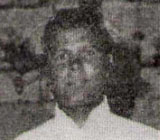
					 <p>அருட்தந்தை. M. அருள் தேவதாசன் ___்__ு_ை_ பணிக்காலத்தில் மறைமாவட்ட சட்டத்திட்டங்களுக்கு உட்பட்டு __்_ு மேய்ப்புப்பணிப் பேரவை அமைக்கப்பட்டது. இக்காலத்தில் _ா_் தற்போதுள்ள பங்குத்தந்தை இல்லமும் கட்டப்பட்டு 1982 - ஆம் ஆண்டு அக்டோபர் 3 - ஆம் நாள் அர்ச்சிக்கப்பட்டது. </p>
					 <br /><br /><br /><br />
					 <h4>11. அருட்தந்தை. V. ஹில்லாரியஸ் (1985 - 1987)  </h4>
					 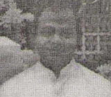
					 <p>அருட்தந்தை. V. ஹில்லாரியஸ் அவர்களின் __ி_்_ா__்_ி_் ஜெபமாலை மலையில் அன்னையின் திருச்சொரூபம் ___்_ி_ கெபியும் அமைக்கப்பட்டது. ஆலயம் சிறப்புற __ி_்_்_ி_ குழல் விளக்குகள் பொருத்தப்பட்டன. </p>
					 <br /><br /><br /><br /><br />
					 <h4>12. அருட்தந்தை. A. இயேசு __ி_ா_் (1987 - 1989)  </h4>
					 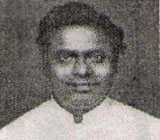
					 <p> அருட்தந்தை. A. இயேசு __ி_ா_் அவர்களின் பணிக்காலத்தில் மறைக்கல்வி மறுமலர்ச்சி __்__ு. கோடை விவிலிய வகுப்புகள் தொடங்கப்பட்டன. __ி_ா_ு__் வாழ்வாகிட முயற்சிகள் எடுக்கப்பட்டன. 1988 - ஆம் ஆண்டு மே மாதம் 5 -ஆம் நாள் கோட்டாறு மறைமாவட்ட __ி_ா_்_ு__ி_் படி தேர்தல் அடிப்படையில் முதல் __்_ு மேய்ப்புப்பணி பேரவை அமைக்கப்பட்டது. </p>
					 <br /><br /><br /><br />
					 <h4>13. அருட்தந்தை. M. அருள் (1989 - 1992)  </h4>
					 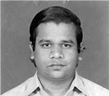
					 <p>அருட்தந்தை. M. அருள் அவர்கள் __் பணிக்காலத்தில், கண்டன்விளையில் சிறப்பாக செயல்பட்டுவரும் __்_ோ_ி_்_ சங்கத்தினரின் ஒத்துழைப்புடன் சிறுமலர் கலையரங்கத்தைக் __்_ி முடித்தார். பண்டாரவிளையில் அமைந்துள்ள புனித _ு__்_ை தெரசாள் தொடக்கப் பள்ளிக்கும் புதிய __்___் கட்டுவதற்கான ஏற்பாடுகளையும் செய்தார். </p>
					 <br /><br /><br /><br />
					 <h4>14. அருட்தந்தை. S. சாலமன் (1992 - 1995)  </h4>
					 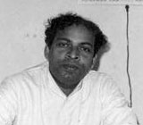
					 <p>1992 - 1995 வரை __்_ு_்__்_ை_ா__் பணியாற்றிய அருட்தந்தை. S. சாலமன் ___்__் மக்களின் தாராள மனதைத் தட்டி __ு_்_ி நன்கொடைகளைப் பெற்று ஆலயத்தின் வடக்கு __்_ு_் தெற்கு கோபுரங்களைக் கட்டி முடித்து 1994 - ஆம் ஆண்டு செப்டம்பர் 23 - இல் அர்ச்சிப்பு விழாவும் ___்_ி_ா_். அவரது பணிக்காலத்தில், ஜெபமாலை மலையில் _ி_்_ா___் கட்டுவதற்கான அடிக்கல்லும் நடப்பட்டது. மேலும், __்_ு_் பேரவையினர், பங்குமக்கள் மற்றும் பங்குத்தந்தை __ி_ோ_ி_் ஒருங்கிணைந்த ஆர்வத்தால் 1995 - __் நவநாள் யூபிலி விழா கொண்டாடப்பட்டது. </p>
					 <br /><br />
					 <h4>15. அருட்தந்தை. G. ஜஸ்டஸ் (1995 - 1996)  </h4>
					 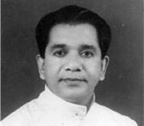
					 <p>1995 முதல் 1996 வரை __ு_்__்_ை. G. ஜஸ்டஸ் அவர்கள் பங்குத்தந்தையாகப் __ி_ா_்_ி_ா_்__். </p>
					 <br /><br /><br /><br /><br /><br />
					 <h4>16. அருட்தந்தை. B. ரசல்ராஜ் (1996 - 1997)  </h4>
					 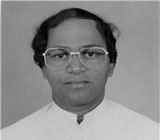
					 <p>1996 முதல் 1997 வரை __ி_ு_ி_்_ அருட்தந்தை. B. ரசல்ராஜ் அவர்கள் _ி_ு_்_ூ_ு_் கழகங்களைப் புதுப்பித்து பங்கின் முகத்தை _ு_ு_்_ி_்__் திட்டமிட்டார். பங்கின் அடித்தள கிறிஸ்தவ __ூ__்__ை அமைத்தார். ஜெபமாலை மலைக்குச் செல்லும் _ா_ை_ோ__்_ி_் திருச்சிலுவைப் பாதையின் 14 நிலைகளையும் _ி_ு_ி_ா_். </p>
					 <p>குழந்தை இயேசுவின் புனித தெரேசாவின் _ி_்___் பிறப்பின் நூற்றாண்டு விழா மிகச் _ி__்_ா_ கொண்டாடப்பட திட்டங்கள் தீட்டினார். இவ்விழாவின் _ி_ை_ு_் சின்னமாக அமைக்க விரும்பியதுடன், தூய _ெ__் அரங்கத்திற்கான அடிக்கல் கோட்டாறு மறைமாவட்ட ___் மேதகு. லியோன் A. தர்மராஜ் ___்__ா_் இடப்பட்டது. நல்லுள்ளம் கொண்ட பலரும் _ா_ா__ா_ நன்கொடைகள் வழங்கினர். மண்ணின் மைந்தர்களில் __ு__ா_ அருட்தந்தை. M. பீட்டர் அவர்களும் ___்__்_ி_் பயன்பாட்டிற்கான மின்சமனி (Generator) ஒன்றை __்__ி_்_ா_ வழங்கினார்கள். </p>
					 <br />
					 <h4>17. அருட்தந்தை. S. இயேசுரெத்தினம் (1997 - 2001)  </h4>
					 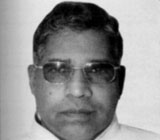
					 <p>1997 - இல் பங்கின் _ொ_ு_்_ை ஏற்ற அருட்தந்தை. S. இயேசு _ெ_்_ி__் அவர்கள் தம் விடா முயற்சியால் __்__ி_் ஒத்துழைப்பைப் பெற்று தெரஸ் அரங்கின் __ை_்___்_ை_் கட்டி முடித்து 1999 - __் ஆண்டு ஜனவரி மாதம் 1 - ஆம் நாள் அர்ச்சித்தார். தரை __ா_ இருந்த ஆலயத்தின் தரைதளம் ரூ. 3,30,000/- செலவில் பளிங்குத்தரையாக மாற்றம் கண்டது. </p>
					 <p>குழந்தை இயேசுவின் புனித தெரேசாவின் _ி_்___் பிறப்பின் நூற்றாண்டு விழா மிகச் _ி__்_ா__் கொண்டாடப்பட்டது. அதன் நினைவாக விழா ___் ஒன்று வெளியிடப்பட்டது. இதுநாள் வரையிலும் _ொ__்__் பள்ளியாக இருந்த புனித தெரசா ___்__்__்_ி, நடுநிலைப் பள்ளியாக உயர்தப்பட்டதோடு வகுப்புக்களில் __ி_ி_் பாடமும் புகுத்தப்பட்டது. நடுநிலைப் பள்ளிக்குத் _ே_ை_ா_ கூடுதல் கட்டடங்களுக்கு ஏற்பாடு செய்யப்பட்டது. __்_ி_் அடித்தள கிறிஸ்தவ சமூகத்தை முறையாக ___்_்_ி_ முயற்சிகள் எடுக்கப்பட்டன. ஏழை மாணவர்களின் __்_ி_்_ா_ நிதி திரட்டப்பட்டது. மண்ணின் மைந்தர்களில் __ு__ா_ அருட்தந்தை. J. எல்ஃபின்ஸ்டன் அவர்கள் __ை__ி_் கல்வி நிதிக்காக பெருந்தொகை நன்கொடையாக __்_ு உதவினார். </p>
					 <br />
					 <h4>18. அருட்தந்தை. F. மரியமிக்கேல் (2001 - 2003)  </h4>
					 
					 <p>2001 - ஆம் ஆண்டு __ு_்__்_ை. S. இயேசு ரெத்தினம் அவர்கள் _ு__ு_ூ_ு வட்டார முதல்வராக பணி உயர்வு _ெ_்_ு_் சென்ற பின் கண்டன்விளை பங்கின் _ொ_ு_்_ை அருட்தந்தை. F. மரியமிக்கேல் ஏற்றுக்கொண்டார். ___் தெரஸ் அரங்கின் 2 -ஆம் ___்_ை_் கட்டும் பணியைத் தொடர்ந்தார். இப்பணி 2002 - இல் நிறைவு செய்யப்பட்டு _ோ_்_ா_ு மறைமாவட்ட ஆயர் மேதகு. லியோன் _. தர்மராஜ் அவர்களால் அர்ச்சிக்கப்பட்டது. அருட்தந்தை. _. மரியமிக்கேல் அவர்களின் பெருமுயற்சியால் பங்கில் __ை_்_ு_ு ஒன்று உருவாக்கப்பட்டது. 2003 - __் ஆண்டு ஏப்ரல் 7 - __் நாள் கோட்டாறு ஆயர் இல்லத்திலிருந்து _ீ__் கொண்டுவரப்பட்டு பவள விழா மிகச் _ி__்_ா_ கொண்டாடப்பட்டது. நன்றித்திருப்பலி நிறைவேற்றப்பட்டு நினைவு ___ு_் வெளியிடப்பட்டது. </p>
					 <br /><br />
					 <h4>19. அருட்தந்தை. S. வின்சென்ட் _ா_் (2003 - 2006)  </h4>
					 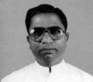
					 <p>2003 - ஆம் ஆண்டு __்_ி_் பொறுப்பை ஏற்ற அருட்தந்தை. S. _ி_்_ெ_்_் ராஜ் அவர்கள் ஜெபமாலை மலைப் __ி_ி_ை_் தொடர்ந்து நடத்தி சிற்றாலயத்தையும் கட்டி _ு_ி_்_ா_். சிற்றாலயம் 2005 - ஆம் __்_ு பெப்ரவரி மாதம் 6 - __் நாள் கோட்டாறு ஆயர் மேதகு. _ி_ோ_் A. தர்மராஜ் அவர்களால் அர்ச்சிக்கப்பட்டது. _ா__்_ி_் முதல் சனிக்கிழமைகளில் இச்சிற்றாலயத்தில் காலை 6:15 மணிக்கு திருப்பலி ஒப்புக்கொடுக்கப்படுகிறது. தூய _ெ__் யூடிகா மருத்துவமனை கட்டப்பட்டு அர்ச்சிக்கப்பட்டது. __்_ு மக்களின் நலனுக்காகாகச் சிறுசேமிப்புத் திட்டம் __்_ு ஆரம்பிக்கப்பட்டு சிறப்பாகச் செயல்பட்டு கொண்டிருக்கிறது. </p>
					 <br /><br /><br />
					 <h4>20. அருட்தந்தை. R. ஐசக்ராஜ் (2006 - 2012)  </h4>
					 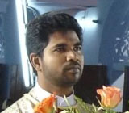
					 <p>அருட்தந்தை. R. ஐசக் ராஜ் ___்__் 2006 - ஆம் ஆண்டில் __்_ி_் பொறுப்பை ஏற்றார்கள். அவர்கள் பங்கு _ே_்_்_ு_்__ி_் பேரவையுடன் இணைந்து ஆலயத்தின் கூரையைப் _ு_ு_்_ி_்_, 2007 - இல் திட்டமிட்டார்கள். __்_ு_்__் கொண்ட மக்கள் தாராளமாக நன்கொடை _ொ_ு_்_ு உதவினர். எனவே, ஓட்டுக்கூரை உலோகக் _ூ_ை_ா_ மாற்றம் பெற்று, 2008 - __் ஆண்டு பெப்ரவரி மாதம் நிறைவு _ெ_்__ு. ஆலயத்தின் பீடமும் ஒரு புதிய _ி_்_ி_ி_் உதவியுடன் மெருகேற்றப்பட்டு புதிதாக்கப்பட்டது. </p>
					 <p>ஆலய மைதானத்திலிருந்து தெரஸ் அரங்கின் _ு__் தளத்திற்கு நேரடியாக நுழையும் பொருட்டு _ு_ி_ சரிவுத்தளமும் பாதையும் அமைக்கப்பட்டது. அத்துடன், _ூ_ தெரஸ் அரங்கிலுள்ள சமையல் பிரிவானது __ை__் எரிவாயு வசதியுடன் விரிவாக்கம் செய்யப்பட்டது. _ெ__ா_ை மலைக்குச் செல்லும் பாதையில் ஜெபமாலை __ை_ு_்_ை__் இருபதும் நிறுவப்பட்டன. </p>
					 <br /><br />
					 <h4>21. அருட்தந்தை. J.R. பேட்ரிக் _ே_ி__் (2012 - 2015)  </h4>
					 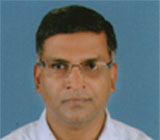
					 <p>அருட்தந்தை. J.R. பேட்ரிக் சேவியர் ___்__் 2012 முதல் 2015 வரை __்_ு_்__்_ை_ா_ மிகச் சிறப்பாகப் பணியாற்றி 2015 - ஆம் ஆண்டு ஜூன் மாதம் 18 - ஆம் நாள் வேறு __்_ி_்_ு மாற்றம் பெற்றார். அவர்கள் ஆலய __ா__்_ி_் சுமார் ரூ.60,00,000/- செலவில் ஆங்கில __ி பள்ளி (மழலையர் பள்ளி) ஒன்றை _ி_ு_ி_ா_்__். அது 200 மாணாக்கர்களுடன் சிறப்பாகச் _ெ__்__்_ு வருகிறது. ரூ.7,21,744/- செலவில் 15 _ெ_்_் நிலம் வாங்கி ஏற்றத்தாழ்வாக இருந்த _ெ__ா_ை மலை சிற்றாலயச் சுற்றுப்புறத்தைச் சமப்படுத்தி __ி_்_ு__ு_் கட்டினார்கள். ஊர்மக்கள் குடிப்பதற்கும், சமைப்பதற்கும் _ு_்__ா_ நீர் கிடைக்க வேண்டும் என்பதற்காக ___ வளாகத்தில் தண்ணீர் சுத்திகரிக்கும் கருவி __்_ை_ு_் நிறுவினார். ஜெபமாலை மலைக்குச் செல்லும் _ு_ை_ா_ி_ி_் ரூ.3,00,000/- செலவில் கல்குருசடி ஒன்றும் __்__்__்__ு. </p>
					 <br /><br />
					 <h4>22. அருட்தந்தை. K. ஜார்ஜ் (2015 - 2016)  </h4>
					 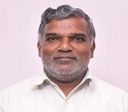
					 <p>2015 - ஆம் ஆண்டு _ூ_் மாதம் 20 - ஆம் _ா_் பங்குத்தந்தையாக அருட்தந்தை. K. ஜார்ஜ் ___்__ு_் அவருடன் இணைப்பங்குத்தந்தையாக அருட்தந்தை. V. _ெ_ி_்_ோ அவர்களும் பொறுப்பேற்றார்கள். இவர்கள் இருவரும் __ு__ு_ காலம் பங்கில் மிகச் சிறப்பாக _ெ__்__்_ா_்__். </p>
					 <p>
						 <h4>அருட்தந்தை. V. பெனிட்டோ (இணைப் __்_ு_்__்_ை, 2015 - 2016)  </h4>
						 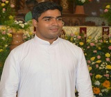
						இவர்களுடைய பணிக்காலத்தில், சிறார் பாடகர் _ு_ு ஓன்று உருவாக்கப்பட்டது; இது சிறார்களுக்கு __ி_ா_்_ி_் தங்களை முழுமையாக ஒப்புக்கொடுக்க ஒரு __ு_ி_ா_ அமைந்தது. அதுமட்டுமல்லாமல், அவர்கள் பதிலுரைப்படல்களை _ா_ு_்_ோ_ு அதிலுள்ள இறைவார்த்தைகளை தங்கள் வாழ்நாள் __ை_்_ு_் நினைவில்கொண்டு அதன்படி வாழ பாடகற்குழு __ு வழிகாட்டியாக இருக்கிறது.
						 <br /><br />
						மேலும், அருட்தந்தையர்கள் இருவரும் பங்கில் ___்_ி வரும் டெக்கீஸ் குழுவினருக்கு திருவிழா _ே__ை ஒளிபரப்பு நிகழ்ச்சியின் போதும், 2015 - ஆம் ஆண்டு டெக்கீஸ் குழு __ா_ி_்_ு வெளியிட்ட குழந்தை இயேசுவின் புனித _ெ_ே_ா மற்றும் கண்டன்விளை ஆலய வரலாறு ___்_ி_ ஆவணக் குறும்பட வெளியீட்டுக்கும் உறுதுணையாக __ு_்___். ஒவ்வொரு வெள்ளிக்கிழமை காலை 11:00 __ி_்_ு ஜெபமாலை மலை சிற்றாலயத்தில் சிறப்பு _ெ__ா_ை, நவநாள் மற்றும் சிறப்புத் திருப்பலி _ி_ை_ே_்_ி இறைமக்களிடம் இறையாண்மையை மிகச் சிறப்பாக _ி_ு_ி__். அத்தோடு, பங்கில் சிறப்பாக செயல்பட்டுக்கொண்டிருக்கும் __்_ோ_ி_்_ சங்கத்தினரின் ஒத்துழைப்புடன் சிற்றாலயத்தின் அருகாமையில், _ி_ா_்_ா திருவுருவச் சிலையையும் நிறுவினர். பங்கு __ி_ா_்__் காரணமாக 2016 - ஆம் __்_ு மே மாதம் 23 - __் நாள் பங்குப் பொறுப்பை அருட்தந்தை. _. சகாய ஜஸ்டஸ் அவர்களிடம் ஒப்படைத்தனர்.
						 <br /><br />
					 </p>				
					 <h4>23. அருட்தந்தை. W. சகாய __்__் (பங்குத்தந்தை, 2016 முதல்)  </h4>
					 
					 <p>அருட்தந்தை. W. சகாய ஜஸ்டஸ் ___்__் 2016 - ஆம் ஆண்டு _ே மாதம் 22 - ஆம் _ா_் பங்கின் பொறுப்பை ஏற்றார்கள். அவர்கள் __்_ு மேய்ப்புப்பணிப் பேரவையுடன் இணைந்து பங்கை _ி__் சிறப்பாக வழிநடத்தி வருகிறார்கள். </p>
					 <p>
					 <br />
						 <h4>அருட்தந்தை. M. ஸ்டீஃபன் ராஜ், ___., (இணைப் பங்குத்தந்தை, 2017 - 2018)  </h4>
						 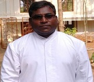
						அருட்தந்தை. M. ஸ்டீஃபன் ராஜ் ___்__் 2017 - ஆம் ஆண்டு _ே மாதம் 21 - ஆம் _ா_் பங்கின் இணைப் பங்குத்தந்தையாக பொறுப்பேற்றுக்கொண்டார். __்_ு_்__்_ை_ு__் இணைந்து பங்குப் பணிகளை மிகச் _ி__்_ா_ செய்துவந்தார். பணி மாற்ற நிமித்தம், 2018 - ஆம் ஆண்டு மே _ா__் 23 - ஆம் நாள், __்_ொ_ு பங்கிற்கு பங்கு அருட்பணியாளராக நியமிக்கப்பட்டார்.
						 <br /><br /><br /><br />
					 </p>
					 <br /><br />
				 </section>
			 </div>
		 </div>
		 <footer id="footer">
	 <div class="container">
		 <div class="social text-center">
			 <a href="http://www.fb.me/thereseofkandanvilai" alt="" target="blank"><i class="fa fa-facebook"></i></a>
			 <a href="https://www.youtube.com/c/StThereseChurchKandanvilai" alt="" target="blank"><i class="fa fa-youtube"></i></a>
		 </div>
		 <div class="clear"></div>
	 </div>
	 <div class="footer2">
		 <div class="container">
			 <div class="row">
				 <div class="col-md-6 panel">
					 <div class="panel-body">
						 <p class="simplenav">
							 <a href="index.php.html">முகப்பு </a>|
							 <a href="sttherese-churches-in-india.php.html">ஆலயங்கள் </a>|
							 <a href="rosary-hill.php.html">சிற்றாலயம் </a>|
							 <a href="mass-schedules.php.html">திருப்பலி நேரங்கள் </a>|
							 <a href="associations.php.html">பக்த சபைகள் </a>|
							 <a href="contact.php.html">முகவரி </a>
						 </p>
					 </div>
				 </div>
				 <div class="col-md-6 panel">
					 <div class="panel-body">
						 <p class="text-right">காப்புரிமை &copy; 2024 அனைத்து __ி_ை__ு_் முன்பதிவு செய்யப்பட்டவை.  <br />Template by <a href="../index.html" rel="develop">St.Therese of Kandanvilai </a></p>
					 </div>
					 <div style="width:100px; margin-top:-54px; margin-left:108px;">
						 <script type="text/javascript">document.write(unescape("%3Cscript src=%27http://s10.histats.com/js15.js%27 type=%27text/javascript%27%3E%3C/script%3E"));</script>
						 <a href="http://www.histats.com" target="_blank" title="Vistor`s summary."><script type="text/javascript">
						try {Histats.start(1,3157953,4,6,200,40,"00011111"); Histats.track_hits();} catch(err){};
						</script></a>
						 <noscript><a href="http://www.histats.com" target="_blank"></a></noscript>
					 </div>
				 </div>				
			 </div>
		 </div>
	 </div>
 </footer>		 <script src="../../ajax.googleapis.com/ajax/libs/jquery/1.10.2/jquery.min.js"></script>
		 <script src="../../netdna.bootstrapcdn.com/bootstrap/3.0.0/js/bootstrap.min.js"></script>
		 <script src="../assets/js/custom.js"></script>
	 
 